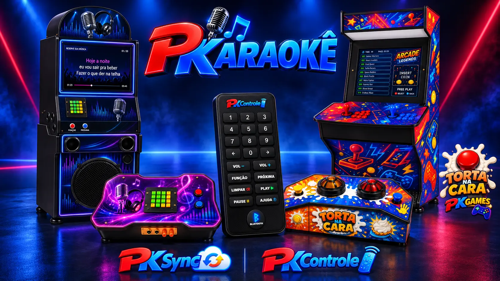
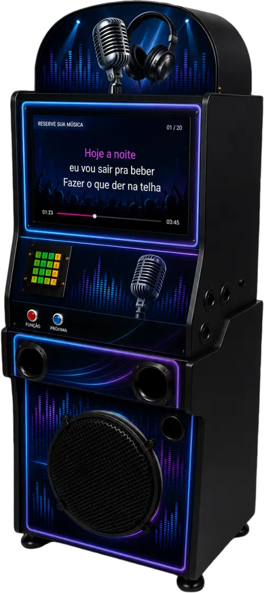
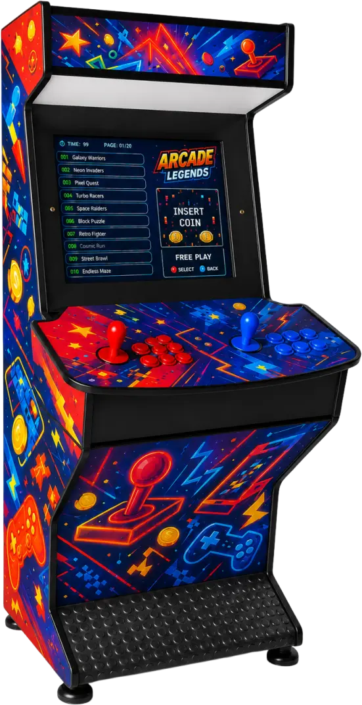
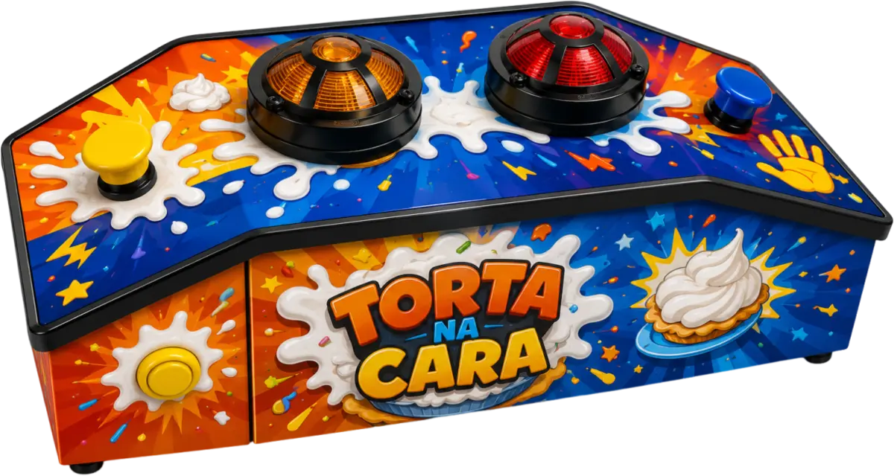
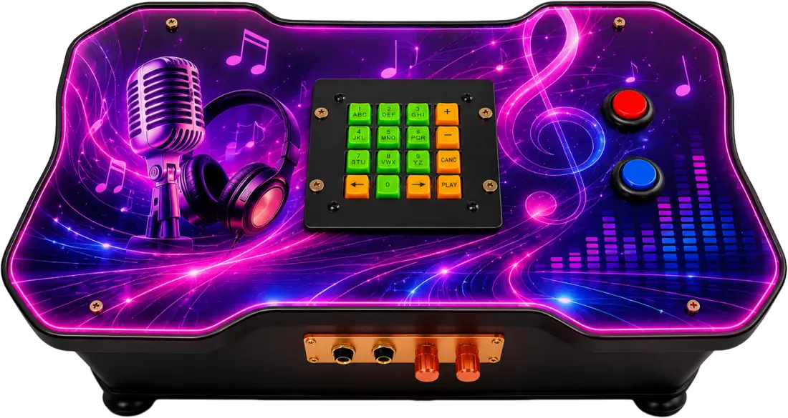
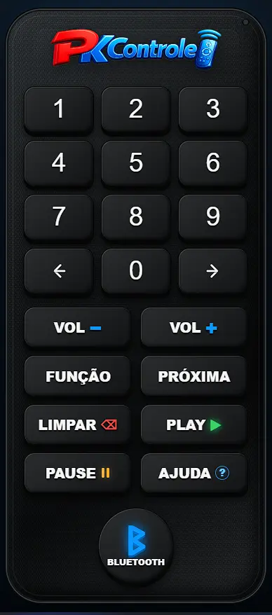

Elétrica & mecânica
Manutenção preventiva e corretiva, diagnóstico de falhas, comandos elétricos, leitura de esquemas e medições.
LINCON MELO / PORTFÓLIO PROFISSIONAL
Sou Lincon Melo. Reúno elétrica, mecânica e desenvolvimento de sistemas na criação de equipamentos de entretenimento e soluções para sua operação.

01 — QUEM SOU
Visão de campo. Pensamento de sistema.Minha trajetória reúne manutenção elétrica e eletrônica, mecânica industrial, suporte de informática e integração de sistemas. Gosto de entender como as partes se conectam — do equipamento físico à aplicação que o controla.
Na PKaraokê e na Karaoke Express, essa experiência ganha forma em equipamentos para cantar, jogar e reunir pessoas. Também desenvolvo os sistemas que apoiam o catálogo musical, o controle remoto, as filas e a distribuição de conteúdo entre equipamentos.
Meu perfil no LinkedInManutenção preventiva e corretiva, diagnóstico de falhas, comandos elétricos, leitura de esquemas e medições.
Suporte técnico, redes cabeadas e Wi-Fi, CFTV, telefonia e integração entre equipamentos e sistemas.
Aplicações web, utilitários para Windows, servidores Linux e automação de tarefas para operações reais.
02 — PRODUTOS & SERVIÇOS
Visite a PKaraokê ↗Fabricação própria, venda e locação de equipamentos para residências, comércios e eventos. Conheça a linha apresentada no meu site.

Karaokê + Jukebox + Bluetooth
Karaokê, Jukebox e Bluetooth.
Equipamento com tela e som integrados. A apresentação comercial reúne mais de 26 mil canções de karaokê, mais de 70 mil músicas e clipes de Jukebox e Bluetooth 5.0.
Conhecer no site oficial ↗
Dois jogadores · visual personalizável
Clássicos para jogar a dois.
Arcade com dois conjuntos de comandos e uma seleção de jogos retrô. O BarTop EVO disponível na loja tem gabinete dividido em duas partes, opções de tela e personalização.
Conhecer no site oficial ↗
Festas · escolas · eventos
Perguntas, botoeiras e muita participação.
Jogo para dois participantes, com sinalização luminosa e sonora e temporização. A loja apresenta as versões Standard de 45 cm e Advanced de 70 cm, com acesso à plataforma de perguntas.
Conhecer no site oficial ↗
Formato maleta · modelo 2×1
Karaokê e Jukebox em formato compacto.
Modelo portátil da linha PKaraokê, com seleção de músicas no próprio painel e efeito de voz. Uma alternativa ao gabinete vertical, disponível na loja com personalização.
Conhecer no site oficial ↗03 — SISTEMAS DO ECOSSISTEMA PK
Necessidades reais transformadas em sistemas.PKSync cuida da distribuição e da gestão remota; PKControle leva os comandos ao celular; PKFila organiza a participação; o Catálogo Digital conecta o público às músicas. Projetos em evolução contínua.
Sincronização de conteúdo e gestão de equipamentos remotos.
01 / INFRAESTRUTURA & SINCRONIZAÇÃO
O servidor e os equipamentos trabalhando juntos.
Sistema que conecta um servidor Ubuntu a clientes Windows para distribuir conteúdo, acompanhar equipamentos e executar comandos remotamente.
Manter conteúdo e equipamentos remotos organizados, mesmo quando não há acesso físico para manutenção.
Centralizar políticas de sincronização, atualização do cliente, comandos e acompanhamento em uma interface web.
Clientes leves, retomada após interrupções, gestão de armazenamento e manutenção automatizada.
A arquitetura integra PHP e JSON no servidor com um cliente Windows em AutoIt. As interfaces web apoiam a gestão de equipamentos e a execução de comandos.
O desenvolvimento também aborda leitura de arquivos por camadas de armazenamento, sincronização de alterações e compatibilidade com Windows 7 x86. Escalabilidade e recuperação de falhas são frentes de evolução do projeto.

O controle do equipamento, no celular.
Interface web de controle remoto integrada ao PKSync, com comandos para o karaokê e acesso por computador ou celular.
Operar o equipamento à distância com uma interface acessível ao usuário.
Uma camada dedicada a comandos, separada da gestão de créditos, filas e perfis. A experiência móvel e a continuidade da comunicação orientam a evolução.
Pedidos de músicas, organização da fila e interação com o público.
Organização para quem canta. Fluidez para o evento.
Gerenciamento da fila de músicas e da participação do público, conectado ao catálogo e ao equipamento de karaokê.
Organizar os pedidos e permitir que o público acompanhe sua participação.
Fila com posição, estimativas e chamadas, integrada à execução das músicas. Reações visuais acrescentam participação do público à experiência.
O encontro entre música, tecnologia e gestão.
Plataforma de catálogo digital e gestão de eventos e estabelecimentos, ligada à operação de entretenimento da Karaoke Express.
Conectar o acesso do público às músicas com a organização da operação.
Catálogo com acesso por conta e favoritos salvos para o usuário. Recursos profissionais, estabelecimentos e equipamentos dependem de liberação administrativa. A gestão de eventos, créditos e fila faz parte da integração do ecossistema.
Abrir Catálogo DigitalMenos tarefas repetitivas. Mais tempo para criar.
Ferramentas próprias para processamento de mídia, conversão de imagens e administração de ambientes técnicos.
Conversão de vídeos, aplicação de marca d’água e tratamento de arquivos em lote, com configurações de resolução e qualidade.
Conversão de formatos, dimensionamento e padronização de imagens para catálogos.
Projeto em desenvolvimento para experimentar assistentes de IA locais em um servidor Ubuntu, com interface web e múltiplas conversas.
04 — COMO EU TRABALHO
Da análise à integração.PHP · Python · AutoIt · JavaScript · HTML · CSS · Bash
Ubuntu Server · Windows · Apache · JSON · SQLite
Comandos elétricos · Eletrônica · Microcontroladores · Redes · CFTV
Entender o contexto · Diagnosticar · Implementar · Testar · Aperfeiçoar
05 — TRAJETÓRIA
Experiência construída na prática.Técnico em EletrotécnicaEscola Técnica EFONAPE
Técnico em Mecânica IndustrialEFONAPE
Formação técnica em Informática
Prestador de serviços autônomo / MEI
Instalações, manutenção, automação, redes e integração de sistemas. Atendimento da análise do problema à configuração, aos testes e à correção.
JCM Telecomunicações
Suporte a clientes, diagnóstico de ocorrências e manutenção de infraestrutura elétrica e eletrônica, redes, telefonia e CFTV.
Instituto IBCViva
Suporte às PAs de atendimento da OAB RJ — Centro e à infraestrutura interna, incluindo redes, telefonia, Wi-Fi e CFTV.
06 — PRÓXIMAS CONEXÕES
Oportunidades profissionais, desenvolvimento de sistemas e projetos técnicos. Para equipamentos, venda, aluguel e personalização, conheça também a PKaraokê.